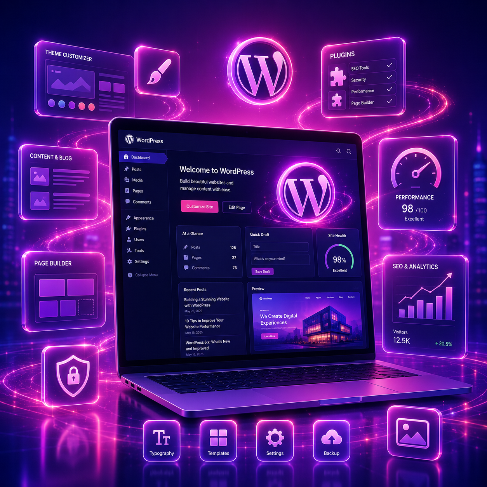

Pilihan praktis
WordPress
Cocok kalau ingin website cepat jadi, mudah diedit sendiri, punya dashboard admin, dan butuh halaman company profile, blog, katalog, atau landing page.
- Mudah update konten dari dashboard
- Cocok untuk company profile dan katalog
- Lebih cepat untuk kebutuhan standar